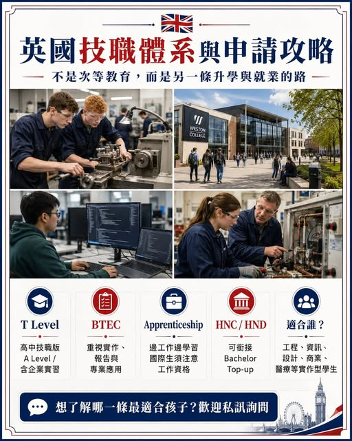

《看懂制度，選對世界》第一集
成績不是最頂尖，就不能去英國讀好學校？
「成績不是最頂尖，就不能去英國讀好學校？」 很多台灣家長，其實一開始就把英國教育想得太窄了。我們最熟悉的是： 高中 A Level 大學 找工作 但英國還有另一套非常成熟的制度： 而且英國的「技職」，不是我們過去印象…

「成績不是最頂尖，就不能去英國讀好學校？」 很多台灣家長，其實一開始就把英國教育想得太窄了。我們最熟悉的是： 高中 A Level 大學 找工作 但英國還有另一套非常成熟的制度： 而且英國的「技職」，不是我們過去印象中的「讀不好才去念」。有些學生16、17歲就已經開始學工程、資訊、建築、商業、設計、醫療，甚至直接進企業實習。最重要的是： Bachelor。Degree Apprenticeship、工程師、 這也是英國教育很值得台灣家長研究的地方。英國技職，到底有哪些路？
T Level 可以把它理解成英國近年非常重視的「高中技職版 A Level」。課程不只讀理論，還要完成大量企業實習。學生可能17歲就在接觸： Engineering Digital Construction Healthcare Business 對不喜歡只靠考試，但實作能力很強的學生，這條路很有吸引力。還有一條台灣學生更值得注意： HNC HND Bachelor Top-up HNC 大約是英國 Level 4， HND 是 Level 5。
簡單理解就是： 高中畢業 ⬇ HNC ⬇ HND ⬇ Bachelor Top-up ⬇ 取得英國學士學位 所以學生不一定一開始就直接進傳統三年 Bachelor。有些學生可以先把專業技能建立起來，再往大學銜接。尤其像： Engineering Computing Business Art & Design Hospitality Construction 都很常看到這種路徑。另外，很多人聽過英國的 但千萬不要以為它只是修車、水電、木工。
現在英國的學徒制，連： Rolls-Royce、Amazon、NHS、PwC、Deloitte 等企業都有參與。甚至還有 Degree Apprenticeship： 一邊工作 ＋ 一邊讀大學 ＋ 領薪水 ＋ 累積工作經驗 ＋ 最後取得學位 這才是英國技職真正厲害的地方。不過台灣學生一定要注意： Apprenticeship 本質上是「 所以不是拿 Student Visa 到英國，就能直接申請所有學徒制。
對國際學生來說，實際更值得研究的通常是： Level 3 技職課程 HNC / HND Foundation Degree 再銜接英國 Bachelor 我一直覺得，台灣教育最大的問題之一，就是太容易把學生全部放進同一條路。但有些學生不是不會讀書。他可能只是： 不喜歡死背。不喜歡考試。不喜歡坐在教室一直聽課。可是給他一台機器、一個程式、一個設計專案、一個真實企業問題，他反而做得非常好。這種學生，為什麼一定要逼他跟所有人走一樣的路？英國技職體系最值得看的地方，就是它讓「技能、升學、就業」之間可以互相銜接。
不是只有名校才叫成功。不是只有傳統大學才叫升學。找到適合孩子能力的教育路線，才是升學規劃真正該做的事。如果孩子喜歡工程、資訊、設計、建築、商業、醫療或實作型學習，英國技職教育，真的值得提早研究。